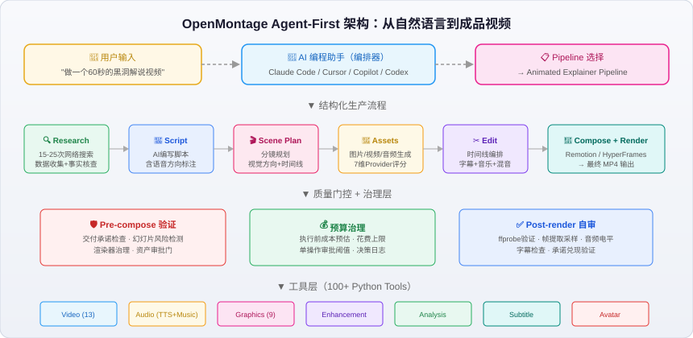
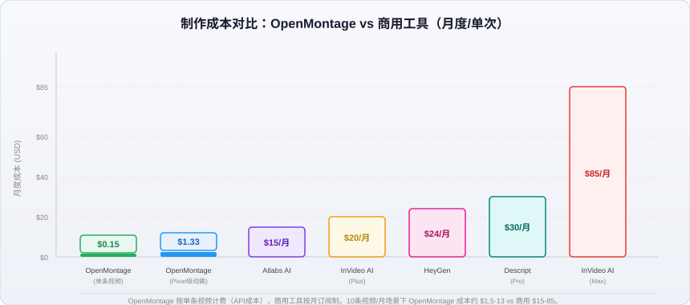
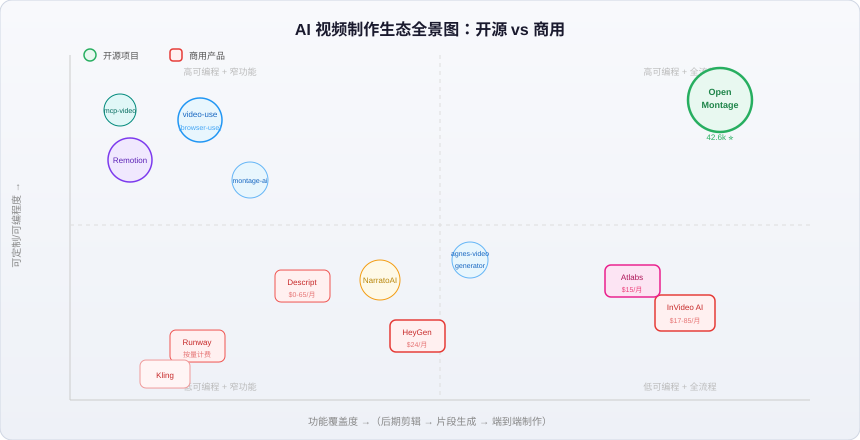

OpenMontage 开源视频制作指南与竞品横评：开源能否打败月费百刀的闭源产品？
42,600 颗 GitHub Star，12 条生产流水线，一段 60 秒的 Pixar 风动画短片制作成本仅 $1.33——这是 OpenMontage 在 2026 年交出的成绩单。当 InVideo AI 月费 $85、HeyGen 单条数字人视频收费 $24 的时代，一个完全开源的项目正试图证明：用代码 + AI Agent 编排，可以替代一整个视频制作团队。
这篇文章将从项目架构、核心能力、实战成本、竞品对比四个维度，帮你判断 OpenMontage 到底是"开发者玩具"还是"生产力工具"。
一、OpenMontage 是什么？
OpenMontage 由 Cales Thio AI Labs 开发，定位为"全球首个开源的 Agentic 视频制作系统"。它不是一个传统的视频编辑器，也不是一个简单的 text-to-video 工具——它是一套完整的视频制作管线，把你的 AI 编程助手（Claude Code、Cursor、Copilot、Windsurf、Codex）变成视频制作工作室。
核心理念：Agent-First Architecture。没有代码编排器，你的 AI 助手就是编排器。它读取流水线定义（YAML）、执行阶段导演技能（Markdown）、调用 Python 工具、自审质量、记录决策日志。
关键数据：
- GitHub Star: 42.6k+
- Forks: 5.1k
- 生产流水线: 12 条
- 工具数: 100+
- Agent技能/知识文件: 700+
- 官网: openmontage.video
二、架构拆解：三层知识 + 流水线驱动

2.1 三层知识架构
Layer 1: tools/ + pipeline_defs/ → "有什么"（可执行能力 + 编排定义）
Layer 2: skills/ → "怎么用"（OpenMontage 的约定和质量标准）
Layer 3: .agents/skills/ → "怎么回事"（外部技术深度知识包）
这种分层设计让 Agent 能像一个有经验的导演一样工作：先看手头有什么工具（Layer 1），再看项目规范怎么要求（Layer 2），遇到具体技术问题时查阅深度知识（Layer 3）。
2.2 统一生产流程
无论选择哪条 Pipeline，所有视频都遵循相同的结构化流程：
research → proposal → script → scene_plan → assets → edit → compose
每个阶段都有专属"导演技能"（Markdown指令文件），Agent 读取后执行、自审、存档状态、请求人类审批。
2.3 12 条生产流水线
| Pipeline | 产出 | 适用场景 |
|---|---|---|
| Animated Explainer | AI生成的解说视频 | 教育内容、教程、知识科普 |
| Animation | 运动图形、动态排版 | 社交媒体、产品演示 |
| Avatar Spokesperson | 数字人发言视频 | 企业沟通、培训 |
| Cinematic | 预告片、氛围向剪辑 | 品牌片、宣传物料 |
| Clip Factory | 长视频→批量短视频 | 社交媒体分发 |
| Documentary Montage | 真实素材纪录片蒙太奇 | 视频随笔、情绪片 |
| Hybrid | 实拍+AI辅助视觉 | 增强现有素材 |
| Localization & Dub | 字幕/配音/翻译 | 多语种分发 |
| Podcast Repurpose | 播客精华→视频 | 播客营销 |
| Screen Demo | 屏幕录制与演示 | 产品演示、文档 |
| Talking Head | 真人发言视频 | 演讲、Vlog |
三、零成本也能做视频：免费路径详解
OpenMontage 最令人惊喜的设计之一：不需要任何付费 API Key 即可做出完整视频。
3.1 零 Key 工具栈
| 能力 | 免费工具 | 效果 |
|---|---|---|
| 语音旁白 | Piper TTS | 本地离线语音合成 |
| 开放素材 | Archive.org + NASA + Wikimedia | 免费纪实/教育素材 |
| 素材图库 | Pexels + Unsplash + Pixabay | 免费图片/视频（Key免费申请） |
| 渲染引擎 | Remotion（React） | 弹簧动画、文字卡片、数据可视化 |
| 渲染引擎 | HyperFrames（HTML/GSAP） | 运动图形、排版动画、SVG角色 |
| 后期 | FFmpeg | 编码、字幕烧录、调色 |
| 字幕 | 内置 | 词级别时间轴字幕 |
3.2 三条免费创作路径
- 图片驱动视频: Piper 配音 + AI图片 + Remotion 动画合成
- 本地角色动画: SVG骨骼 + 姿态库 + GSAP时间线 + HyperFrames 渲染
- 真实素材视频: CLIP语义检索 Archive.org/NASA/Wikimedia 动态素材 → 剪辑成时间线
第三条路径尤其值得关注——它用语义搜索（CLIP向量）从公开档案库中找到最匹配的动态视频片段，按时间线自动编排，产出的是真正的"视频"而非"图片幻灯片"。
3.3 付费路径的成本参考
| 案例 | 时长 | 用了什么 | 成本 |
|---|---|---|---|
| "THE LAST BANANA" Pixar风动画 | 60s | 6个Kling v3片段 + Chirp3语音 + 免费音乐 | $1.33 |
| "The Library at Alexandria" 历史挽歌 | 70s | OpenAI TTS + 纯手绘场景 + Pixabay配乐 | $0.02 |
| "VOID Neural Interface" 产品广告 | 30s | gpt-image-1 × 4 + TTS + 免费音乐 | $0.69 |
| Ghibli风格动画 | 60s | 12张FLUX图 + 粒子特效 + 环境音乐 | $0.15 |
对比 InVideo AI 的 $17-85/月订阅制和 Runway 按秒计费的模式，OpenMontage 的单次成本优势是碾压级的。

四、核心特性深度解读
🎬 官方演示视频推荐：OpenMontage 团队在 YouTube（@OpenMontage）持续发布由系统制作的成品视频，每条视频附带完整 prompt、使用的 Pipeline、工具清单和成本明细，可直接复现。代表作包括科幻预告片 "SIGNAL FROM TOMORROW"、Pixar风短片 "THE LAST BANANA"（$1.33）、以及仅花费 $0.02 的历史纪录片 "The Library at Alexandria"。
4.1 参考视频驱动
这是商用工具很少提供的功能。你可以粘贴一个 YouTube Short、Reel 或 TikTok 链接，Agent 会：
- 分析转录、节奏、场景、关键帧、风格
- 提供 2-3 个差异化创作方案
- 给出每个方案的工具路径、成本估算
- 展示样本后再全量制作
这比"从零写一个完美prompt"的效率高得多。
4.2 Provider智能选择
每次需要调用外部服务时（图片生成、视频生成、TTS），系统会从 7 个维度对所有可用 Provider 打分：
- Task Fit（任务匹配度）
- Output Quality（输出质量）
- Control（可控性）
- Reliability（可靠性）
- Cost Efficiency（性价比）
- Latency（延迟）
- Continuity（一致性）
打分结果记入决策日志，可审计可追溯。
4.3 Backlot 实时看板
生产过程中，Agent 自动在本地开启一个看板界面：
- 阶段点亮（研究→脚本→分镜→素材→剪辑→渲染）
- 脚本以剧本页形式呈现
- 每个场景卡片在素材生成时闪烁
- 每笔花费和每个Provider决策实时上墙
- 支持回放整个生产过程
4.4 质量门控体系
- Pre-compose验证: 交付承诺检查、幻灯片风险检测、渲染器治理
- Post-render自审: ffprobe验证、帧提取采样、音频电平分析、字幕检查
- 资产审批门: 逐场景接触表（takes/prompts/成本/质量分），在渲染前审批视觉
五、竞品横评：开源 vs 闭源

5.1 开源生态对比
| 项目 | Stars | 定位 | 全流程 | 零Key可用 | Agent-Native |
|---|---|---|---|---|---|
| OpenMontage | 42.6k | 全流程Agentic视频制作 | ✅ | ✅ | ✅ |
| video-use (browser-use) | - | 对话式视频后期剪辑 | ❌ | ✅ | ✅ |
| montage-ai | - | 本地优先视频打磨 | ❌ | ✅ | 部分 |
| NarratoAI | - | 影视解说一键生成 | 部分 | ❌ | ❌ |
| agnes-video-generator | - | 文字→多场景视频 | 部分 | ✅ | ❌ |
| Remotion | 22k+ | 程序化视频渲染引擎 | ❌ | ✅ | 部分 |
| mcp-video | - | MCP协议视频编辑Server | ❌ | ✅ | ✅ |
关键结论: OpenMontage 是目前唯一覆盖"调研→脚本→分镜→素材→剪辑→渲染"全链路的开源方案。video-use 和 montage-ai 偏后期剪辑，NarratoAI 专注解说赛道，agnes-video-generator 依赖外部API但不做编排决策。
5.2 商用产品对比
| 产品 | 月费 | 核心卖点 | 不足 |
|---|---|---|---|
| InVideo AI | $17-85 | 1600万素材库、50+语种、一键出片 | 可定制度低，超出模板就束手无策 |
| HeyGen | $24起 | 175+语言数字人、唇语同步 | 仅数字人发言，非全管线 |
| Synthesia | $29起 | 企业培训Avatar、SCORM导出 | 企业内训专用，创意空间有限 |
| Descript | $0-65 | 文本式编辑=编辑视频 | 偏后期，不做从零生产 |
| Runway Gen-4 | 按量 | 角色一致性、多镜头生成 | 仅片段生成，需手动拼接 |
| Kling 3.0 | 按量 | 电影级质量、人脸真实感 | 仅片段生成 |
| Atlabs AI | $15起 | 端到端UGC视频流程 | 闭源，无法本地化部署 |
5.3 维度对比矩阵
| 维度 | OpenMontage | InVideo AI | HeyGen | Descript |
|---|---|---|---|---|
| 全流程自动化 | ⭐⭐⭐⭐⭐ | ⭐⭐⭐⭐ | ⭐⭐⭐ | ⭐⭐ |
| 可定制/可扩展 | ⭐⭐⭐⭐⭐ | ⭐⭐ | ⭐⭐ | ⭐⭐⭐ |
| 单次制作成本 | ⭐⭐⭐⭐⭐ | ⭐⭐⭐ | ⭐⭐ | ⭐⭐⭐ |
| 上手难度 | ⭐⭐ (需开发经验) | ⭐⭐⭐⭐⭐ | ⭐⭐⭐⭐ | ⭐⭐⭐⭐ |
| 视频生成质量 | ⭐⭐⭐ (取决于Provider) | ⭐⭐⭐⭐ | ⭐⭐⭐⭐ | N/A |
| 数据隐私/本地化 | ⭐⭐⭐⭐⭐ | ⭐ | ⭐ | ⭐⭐ |
| 无GUI上手 | 需要终端/IDE | 有Web界面 | 有Web界面 | 有桌面App |
六、OpenMontage 适合谁？
✅ 非常适合
- 开发者/技术创作者: 有AI编程助手使用经验，享受代码化工作流
- 内容工作室: 需要批量生产且想控制单位成本
- 教育工作者: 频繁制作解说视频，预算有限
- 独立创作者: 已经在用Claude Code / Cursor做日常开发，想顺手做视频
- 企业内部团队: 对数据隐私有要求，需要本地化部署
❌ 不太适合
- 非技术用户: 没有终端/IDE使用经验的人
- 需要即时出片的营销团队: 急需"30秒内出片"的场景
- 追求最顶级视觉质量的电影制作: 原生Runway/Kling画质仍领先
- 纯数字人场景: HeyGen/Synthesia更成熟
七、快速上手指南
7.1 环境要求
- Python 3.10+
- FFmpeg
- Node.js 18+
- 一个AI编程助手（Claude Code / Cursor / Copilot / Windsurf / Codex）
7.2 安装
git clone https://github.com/calesthio/OpenMontage.git
cd OpenMontage
make setup
Windows PowerShell:
py -3 -m venv .venv
.\.venv\Scripts\Activate.ps1
python -m pip install -r requirements.txt
cd remotion-composer; npm install; cd ..
python -m pip install piper-tts
Copy-Item .env.example .env
7.3 第一个视频
打开你的AI编程助手，输入：
"Make a 45-second animated explainer about why the sky is blue"
零API Key即可完成。如果想要真实素材路径：
"Make a 75-second documentary montage about city life in the rain.
Use real footage only, no narration, elegiac tone, with music."
7.4 从参考视频开始
"Here's a YouTube Short I love. Make me something like this,
but about quantum computing."
Agent会分析参考视频的节奏、钩子、结构、语调，生成差异化方案。
八、未来展望
OpenMontage 的崛起代表了一个清晰的趋势：Agent-Native 工具正在重塑创意生产流程。当AI编程助手的能力边界不断扩张（更长的上下文、更强的规划能力、更好的工具调用），基于 Agent 编排的视频制作将越来越接近专业团队的产出质量。
几个值得关注的方向：
- Remotion + AI Agent 生态: Remotion作为底层渲染引擎正在被越来越多的Agent工具集成
- MCP协议视频工具: mcp-video等项目让视频编辑能力以标准化协议暴露给任意Agent
- HyperFrames (HeyGen开源): HTML/CSS/GSAP渲染路径让Web开发者也能做运动图形
- 本地模型进步: 随着端侧模型（Gemma4、MiniCPM）和本地推理能力增强，零云端依赖的视频制作将更加可行
小结
OpenMontage 不是要"杀死"InVideo 或 HeyGen——它们服务的用户画像本来就不同。但它证明了一件事：当 AI Agent 能力足够强时，一个精心设计的开源框架 + 免费素材库 + 本地渲染引擎，就能以接近零的边际成本完成以前需要付费订阅才能做到的事。
如果你是开发者，且已经在用 Claude Code 或 Cursor 做日常工作，OpenMontage 值得一试。它的学习曲线不低，但一旦跑通第一个视频，你会发现自己拥有了一个几乎无限制的视频制作能力——而你的"月费"只是 AI 助手本身的订阅。
免责声明: 本文基于公开信息和项目文档撰写，所述产品价格和功能可能随时间变化。使用任何工具前请查阅官方最新文档。文中成本数据来源于 OpenMontage 官方示例，实际成本可能因 Provider 定价调整而变化。
参考来源
- OpenMontage GitHub 仓库
- OpenMontage 官网
- VisionStory - OpenMontage 2026 Guide
- ScriptByAI - Free AI Video Production Agent
- Pinggy - OpenMontage Agentic Video Production
- video-use (browser-use)
- montage-ai (mfahsold)
- NarratoAI
- agnes-video-generator
- InVideo AI
- HeyGen
- Descript
相关阅读
- 闭源编程工具横评：Cursor vs Copilot vs Codeium 深度对比
- OpenCode 免费编程 Agent 完全指南
- Vibe Coding 的隐藏代价与安全风险
- 从 LLM 到 Agent：ChatGPT 聊天已死，范式转换进行时
- MCP vs A2A：AI Agent 协议深度对比
- CapCut AI 视频剪辑深度体验
推荐搭配装备
善其事，利其器。以下硬件能最大化你的AI体验👇
🔗 通过以上链接购买可支持本站持续运营 🙏